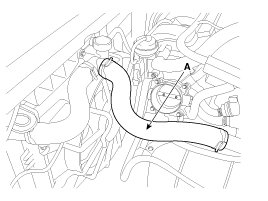
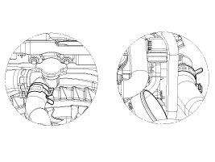
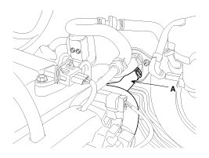
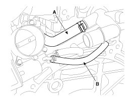
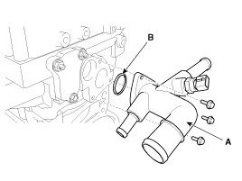

Thermostat Housing: Service and Repair
Removal and Installation
1. Drain engine coolant so its level is below water temperature control assembly.
2. Remove the air cleaner assembly.
3. Disconnect the radiator upper hose (A).

NOTE:
When installing radiator hoses, install as shown in illustrations.

4. Disconnect the heater hose (A).

NOTE:
When installing the heater hoses, install as shown in illustrations.

5. Disconnect the bypass hose (A) and the throttle body coolant hose (B).

6. Remove the water temperature control assembly (A) with the O-ring (B).
Tightening torque:
9.8 - 11.8 N.m (1.0 - 1.2 kgf.m, 7.2 - 8.7 lb-ft)

7. Installation is reverse order of removal.
NOTE:
- Install a new O-ring.
- Clean surface on the O-ring and install the O-ring after wetting with water.